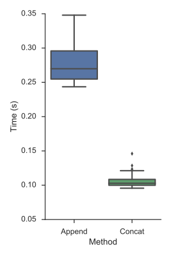

This is part 4 in my series on writing modern idiomatic pandas.
- Modern Pandas
- Method Chaining
- Indexes
- Fast Pandas (this post)
- Tidy Data (forthcoming)
- Visualization (forthcoming)
- Larger Data (forthcoming)
This post is available as a Jupyter notebook
Wes McKinney, the creator of pandas, is kind of obsessed with performance. From micro-optimizations for element access, to embedding a fast hash table inside pandas, we all benefit from his and others' hard work. This post will focus mainly on making efficient use of pandas and NumPy.
One thing I'll explicitly not touch on is storage formats. Performance is just one of many factors that go into choosing a storage format. Just know that pandas can talk to many formats, and the format that strikes the right balance between performance, portability, data-types, metadata handling, etc., is an ongoing topic of discussion.
Constructors
It's pretty common to have many similar sources (say a bunch of CSVs) that need to be combined into a single DataFrame. There are two routes to the same end:
- Initialize one DataFrame and append to that
- Make many smaller DataFrames and concatenate at the end
For pandas, the second option is faster. DataFrame appends are expensive relative to a list append. Depending on the values, pandas might have to recast the data to a different type. And indexes are immutable, so each time you append pandas has to create an entirely new one.
In the last section we downloaded a bunch of weather files, one per state, writing each to a separate CSV. One could imagine coming back later to read them in, using the following code.
The idiomatic python way
files = glob.glob('weather/*.csv') columns = ['station', 'date', 'tmpf', 'relh', 'sped', 'mslp', 'p01i', 'vsby', 'gust_mph', 'skyc1', 'skyc2', 'skyc3'] # init empty DataFrame, like you might for a list weather = pd.DataFrame(columns=columns) for fp in files: city = pd.read_csv(fp, columns=columns) weather.append(city)
This is pretty standard code, quite similar to building up a list of tuples, say. The only nitpick is that you'd probably use a list-comprehension if you were just making a list. But we don't have special syntax for DataFrame-comprehensions (if only), so you'd fall back to the "initialize empty container, append to said container" pattern.
But there's a better, pandorable, way
files = glob.glob('weather/*.csv') weather_dfs = [pd.read_csv(fp, names=columns) for fp in files] weather = pd.concat(weather_dfs)
Subjectively this is cleaner and more beautiful. There's fewer lines of code. You don't have this extraneous detail of building an empty DataFrame. And objectively the pandorable way is faster, as we'll test next.
We'll define two functions for building an identical DataFrame. The first append_df, creates an empty DataFrame and appends to it. The second, concat_df, creates many DataFrames, and concatenates them at the end. We also write a short decorator that runs the functions a handful of times and records the results.
import time size_per = 5000 N = 100 cols = list('abcd') def timed(n=30): ''' Running a microbenchmark. Never use this. ''' def deco(func): def wrapper(*args, **kwargs): timings = [] for i in range(n): t0 = time.time() func(*args, **kwargs) t1 = time.time() timings.append(t1 - t0) return timings return wrapper return deco @timed(60) def append_df(): ''' The pythonic (bad) way ''' df = pd.DataFrame(columns=cols) for _ in range(N): df.append(pd.DataFrame(np.random.randn(size_per, 4), columns=cols)) return df @timed(60) def concat_df(): ''' The pandorabe (good) way ''' dfs = [pd.DataFrame(np.random.randn(size_per, 4), columns=cols) for _ in range(N)] return pd.concat(dfs, ignore_index=True)
t_append = append_df() t_concat = concat_df() timings = (pd.DataFrame({"Append": t_append, "Concat": t_concat}) .stack() .reset_index() .rename(columns={0: 'Time (s)', 'level_1': 'Method'})) timings.head()
| level_0 | Method | Time (s) | |
|---|---|---|---|
| 0 | 0 | Append | 0.349350 |
| 1 | 0 | Concat | 0.124814 |
| 2 | 1 | Append | 0.282151 |
| 3 | 1 | Concat | 0.105221 |
| 4 | 2 | Append | 0.328016 |
plt.figure(figsize=(6, 10)) sns.boxplot(x='Method', y='Time (s)', data=timings) sns.despine()

Datatypes
The pandas type system essentially NumPy's with a few extensions (categorical, datetime64 with timezone, timedelta64).
An advantage of the DataFrame over a 2-dimensional NumPy array is that the DataFrame can have columns of various types within a single table.
That said, each column should have a specific dtype; you don't want to be mixing bools with ints with strings within a single column.
For one thing, this is slow.
It forces the column to be have an object dtype (the fallback python-object container type), which means you don't get any of the type-specific optimizations in pandas or NumPy.
For another, it means you're probably violating the maxims of tidy data, which we'll discuss next time.
When should you have object columns?
There are a few places where the NumPy / pandas type system isn't as rich as you might like.
There's no integer NA (at the moment anyway), so if you have any missing values, represented by NaN, your otherwise integer column will be floats.
There's also no date dtype (distinct from datetime).
Consider the needs of your application: can you treat an integer 1 as 1.0?
Can you treat date(2016, 1, 1) as datetime(2016, 1, 1, 0, 0)?
In my experience, this is rarely a problem other than when writing to something with a stricter schema like a database.
But at that point it's fine to cast to one of the less performant types, since you're just not doing numeric operations anymore.
The last case of object dtype data is text data.
Pandas doesn't have any fixed-width string dtypes, so you're stuck with python objects.
There is an important exception here, and that's low-cardinality text data, for which you'll want to use the category dtype (see below).
If you have object data (either strings or python objects) that needs to be converted, checkout the to_numeric, to_datetime and to_timedelta methods.
Iteration, Apply, And Vectorization
We know that "Python is slow" (scare quotes since that statement is too broad to be meaningful). There are various steps that can be taken to improve your code's performance from relatively simple changes, to rewriting your code in a lower-level language, to trying to parallelize it. And while you might have many options, there's typically an order you would proceed in.
First (and I know it's cliché to say so, but still) benchmark your code. Make sure you actually need to spend time optimizing it. There are many options for benchmarking and visualizing where things are slow.
Second, consider your algorithm.
Make sure you aren't doing more work than you need to.
A common one I see is doing a full sort on an array, just to select the N largest or smallest items.
Pandas has methods for that.
df = pd.read_csv("878167309_T_ONTIME.csv") delays = df['DEP_DELAY'] # Select the 5 largest delays delays.nlargest(5).sort_values() 62914 1461.0 455195 1482.0 215520 1496.0 454520 1500.0 271107 1560.0 Name: DEP_DELAY, dtype: float64
delays.nsmallest(5).sort_values() 307517 -112.0 39907 -85.0 44336 -46.0 78042 -44.0 27749 -42.0 Name: DEP_DELAY, dtype: float64
We follow up the nlargest or nsmallest with a sort (the result of nlargest/smallest is unordered), but it's much easier to sort 5 items than 500,000. The timings bear this out:
%timeit delays.sort_values().tail(5) 10 loops, best of 3: 63.3 ms per loop
%timeit delays.nlargest(5).sort_values() 100 loops, best of 3: 12.3 ms per loop
"Use the right algorithm" is easy to say, but harder to apply in practice since you have to actually figure out the best algorithm to use. That one comes down to experience.
Assuming you're at a spot that needs optimizing, and you've got the correct algorithm, and there isn't a readily available optimized version of what you need in pandas/numpy/scipy/scikit-learn/statsmodels/..., then what?
The first place to turn is probably a vectorized NumPy implementation. Vectorization here means operating directly on arrays, rather than looping over lists scalars. This is generally much less work than rewriting it in something like Cython, and you can get pretty good results just by making effective use of NumPy and pandas. While not every operation can be vectorized, many can.
Let's work through an example calculating the Great-circle distance between airports. We'll compare two implementations: a (non-vectorized) python version and a vectorized NumPy / pandas version. Grab the table of airport latitudes and longitudes from the BTS website and extract it to a CSV.
coord = (pd.read_csv("227597776_T_MASTER_CORD.csv", index_col=['AIRPORT']) .query("AIRPORT_IS_LATEST == 1")[['LATITUDE', 'LONGITUDE']] .dropna() .sample(n=500, random_state=42) .sort_index()) coord.head()
| LATITUDE | LONGITUDE | |
|---|---|---|
| AIRPORT | ||
| A03 | 58.457500 | -154.023333 |
| A12 | 60.785278 | -158.864444 |
| A21 | 65.851389 | -164.702778 |
| A27 | 64.440000 | -144.936389 |
| A43 | 57.780833 | -152.391111 |
For whatever reason, suppose we're interested in all the pairwise distances (I've limited it to just a sample of 500 airports to make this manageable. In the real world you probably don't need all the pairwise distances and would be better off with a tree. Remember: think about what you actually need, and find the right algorithm for that).
MultiIndexes have an alternative from_product constructor for getting the Cartesian product of the arrays you pass in.
We'll give it coords.index twice (to get its Cartesian product with itself).
That gives a MultiIndex of all the combination.
With some minor reshaping of coords we'll have a DataFrame with all the latitude/longitude pairs.
idx = pd.MultiIndex.from_product([coord.index, coord.index], names=['origin', 'dest']) pairs = pd.concat([coord.add_suffix('_1').reindex(idx, level='origin'), coord.add_suffix('_2').reindex(idx, level='dest')], axis=1) pairs.head()
| LATITUDE_1 | LONGITUDE_1 | LATITUDE_2 | LONGITUDE_2 | ||
|---|---|---|---|---|---|
| origin | dest | ||||
| A03 | A03 | 58.4575 | -154.023333 | 58.457500 | -154.023333 |
| A12 | 58.4575 | -154.023333 | 60.785278 | -158.864444 | |
| A21 | 58.4575 | -154.023333 | 65.851389 | -164.702778 | |
| A27 | 58.4575 | -154.023333 | 64.440000 | -144.936389 | |
| A43 | 58.4575 | -154.023333 | 57.780833 | -152.391111 |
We'll break that down a bit, but don't lose sight of the real target: our great-circle distance calculation.
The add_suffix (and add_prefix) method is handy for quickly renaming the columns.
coord.add_suffix('_1').head()
| LATITUDE_1 | LONGITUDE_1 | |
|---|---|---|
| AIRPORT | ||
| A03 | 58.457500 | -154.023333 |
| A12 | 60.785278 | -158.864444 |
| A21 | 65.851389 | -164.702778 |
| A27 | 64.440000 | -144.936389 |
| A43 | 57.780833 | -152.391111 |
Alternatively you could use the more general .rename like coord.rename(columns=lambda x: x + '_1').
Next, we have the reindex.
Like I mentioned last time, indexes are crucial to pandas.
.reindex is all about aligning a Series or DataFrame to a given index.
In this case we use .reindex to align our original DataFrame to the new
MultiIndex of combinations.
By default, the output will have the original value if that index label was already present, and NaN otherwise.
If we just called coord.reindex(idx), with no additional arguments, we'd get a DataFrame of all NaNs.
coord.reindex(idx).head()
| LATITUDE | LONGITUDE | ||
|---|---|---|---|
| origin | dest | ||
| A03 | A03 | NaN | NaN |
| A12 | NaN | NaN | |
| A21 | NaN | NaN | |
| A27 | NaN | NaN | |
| A43 | NaN | NaN |
That's because there weren't any values of idx that were in coord.index,
which makes sense since coord.index is just a regular one-level Index, while idx is a MultiIndex.
We use the level keyword to handle the transition from the original single-level Index, to the two-leveled idx.
level: int or nameBroadcast across a level, matching Index values on the passed MultiIndex level
coord.reindex(idx, level='dest').head()
| LATITUDE | LONGITUDE | ||
|---|---|---|---|
| origin | dest | ||
| A03 | A03 | 58.457500 | -154.023333 |
| A12 | 60.785278 | -158.864444 | |
| A21 | 65.851389 | -164.702778 | |
| A27 | 64.440000 | -144.936389 | |
| A43 | 57.780833 | -152.391111 |
If you ever need to do an operation that mixes regular single-level indexes with Multilevel Indexes, look for a level keyword argument.
For example, all the arithmatic methods (.mul, .add, etc.) have them.
This is a bit wasteful since the distance from airport A to B is the same as B to A.
We could easily fix this with a idx = idx[idx.get_level_values(0) <= idx.get_level_values(1)], but we'll ignore that for now.
Quick tangent, I got some... let's say skepticism, on my last piece about the value of indexes. Here's an alternative version for the skeptics
from itertools import product, chain coord2 = coord.reset_index()
x = product(coord2.add_suffix('_1').itertuples(index=False), coord2.add_suffix('_2').itertuples(index=False)) y = [list(chain.from_iterable(z)) for z in x] df2 = (pd.DataFrame(y, columns=['origin', 'LATITUDE_1', 'LONGITUDE_1', 'dest', 'LATITUDE_1', 'LONGITUDE_2']) .set_index(['origin', 'dest'])) df2.head()
| LATITUDE_1 | LONGITUDE_1 | LATITUDE_1 | LONGITUDE_2 | ||
|---|---|---|---|---|---|
| origin | dest | ||||
| A03 | A03 | 58.4575 | -154.023333 | 58.457500 | -154.023333 |
| A12 | 58.4575 | -154.023333 | 60.785278 | -158.864444 | |
| A21 | 58.4575 | -154.023333 | 65.851389 | -164.702778 | |
| A27 | 58.4575 | -154.023333 | 64.440000 | -144.936389 | |
| A43 | 58.4575 | -154.023333 | 57.780833 | -152.391111 |
It's also readable (it's Python after all), though a bit slower.
To me the .reindex method seems more natural.
My thought process was, "I need all the combinations of origin & destination (MultiIndex.from_product).
Now I need to align this original DataFrame to this new MultiIndex (coords.reindex)."
With that diversion out of the way, let's turn back to our great-circle distance calculation. Our first implementation is pure python. The algorithm itself isn't too important, all that matters is that we're doing math operations on scalars.
import math def gcd_py(lat1, lng1, lat2, lng2): ''' Calculate great circle distance between two points. http://www.johndcook.com/blog/python_longitude_latitude/ Parameters ---------- lat1, lng1, lat2, lng2: float Returns ------- distance: distance from ``(lat1, lng1)`` to ``(lat2, lng2)`` in kilometers. ''' # python2 users will have to use ascii identifiers (or upgrade) degrees_to_radians = math.pi / 180.0 ϕ1 = (90 - lat1) * degrees_to_radians ϕ2 = (90 - lat2) * degrees_to_radians θ1 = lng1 * degrees_to_radians θ2 = lng2 * degrees_to_radians cos = (math.sin(ϕ1) * math.sin(ϕ2) * math.cos(θ1 - θ2) + math.cos(ϕ1) * math.cos(ϕ2)) # round to avoid precision issues on identical points causing ValueErrors cos = round(cos, 8) arc = math.acos(cos) return arc * 6373 # radius of earth, in kilometers
The second implementation uses NumPy.
Aside from numpy having a builtin deg2rad convenience function (which is probably a bit slower than multiplying by a constant \(\frac{\pi}{180}\)), basically all we've done is swap the math prefix for np.
Thanks to NumPy's broadcasting, we can write code that works on scalars or arrays of conformable shape.
def gcd_vec(lat1, lng1, lat2, lng2): ''' Calculate great circle distance. http://www.johndcook.com/blog/python_longitude_latitude/ Parameters ---------- lat1, lng1, lat2, lng2: float or array of float Returns ------- distance: distance from ``(lat1, lng1)`` to ``(lat2, lng2)`` in kilometers. ''' # python2 users will have to use ascii identifiers ϕ1 = np.deg2rad(90 - lat1) ϕ2 = np.deg2rad(90 - lat2) θ1 = np.deg2rad(lng1) θ2 = np.deg2rad(lng2) cos = (np.sin(ϕ1) * np.sin(ϕ2) * np.cos(θ1 - θ2) + np.cos(ϕ1) * np.cos(ϕ2)) arc = np.arccos(cos) return arc * 6373
To use the python version on our DataFrame, we can either iterate...
%%time pd.Series([gcd_py(*x) for x in pairs.itertuples(index=False)], index=pairs.index)
CPU times: user 955 ms, sys: 13.6 ms, total: 968 ms
Wall time: 971 ms
origin dest
A03 A03 0.000000
A12 375.581448
A21 989.197819
A27 820.626078
A43 121.894542
...
ZXX ZMT 1262.373758
ZNE 14222.583846
ZNZ 15114.635597
ZXK 1346.351439
ZXX 0.000000
dtype: float64
Or use DataFrame.apply.
%%time r = pairs.apply(lambda x: gcd_py(x['LATITUDE_1'], x['LONGITUDE_1'], x['LATITUDE_2'], x['LONGITUDE_2']), axis=1);
CPU times: user 16.1 s, sys: 63.8 ms, total: 16.2 s Wall time: 16.2 s
But as you can see, you don't want to use apply, especially with axis=1 (calling the function on each row).
It's doing a lot more work handling dtypes in the background, and trying to infer the correct output shape that are pure overhead in this case.
On top of that, it has to essentially use a for loop internally.
You rarely want to use DataFrame.apply and almost never should use it with axis=1.
Better to write functions that take arrays and pass those in directly, like we did with the vectorized version
%%time r = gcd_vec(pairs['LATITUDE_1'], pairs['LONGITUDE_1'], pairs['LATITUDE_2'], pairs['LONGITUDE_2'])
CPU times: user 35.2 ms, sys: 7.2 ms, total: 42.5 ms Wall time: 32.7 ms
r.head()
origin dest
A03 A03 0.000000
A12 375.581350
A21 989.197915
A27 820.626105
A43 121.892994
dtype: float64
So about 30x faster, and more readable. I'll take it.
I try not to use the word "easy" when teaching, but that optimization was easy right?
Why then, do I come across uses of apply, in my code and others', even when the vectorized version is available?
The difficulty lies in knowing about broadcasting, and seeing where to apply it.
For example, the README for lifetimes (by Cam Davidson Pilon, also author of Bayesian Methods for Hackers, lifelines, and Data Origami) used to have an example of passing this method into a DataFrame.apply.
data.apply(lambda r: bgf.conditional_expected_number_of_purchases_up_to_time( t, r['frequency'], r['recency'], r['T']), axis=1 )
If you look at the function I linked to, it's doing a fairly complicated computation involving a negative log likelihood and the Gamma function from scipy.special.
But crucially, it was already vectorized.
We were able to change the example to just pass the arrays (Series in this case) into the function, rather than applying the function to each row.
bgf.conditional_expected_number_of_purchases_up_to_time( t, data['frequency'], data['recency'], data['T'] )
This got us another 30x speedup on the example dataset.
I bring this up because it's very natural to have to translate an equation to code and think, "Ok now I need to apply this function to each row", so you reach for DataFrame.apply.
See if you can just pass in the NumPy array or Series itself instead.
Not all operations this easy to vectorize. Some operations are iterative by nature, and rely on the results of surrounding computations to proceed. In cases like this you can hope that one of the scientific python libraries has implemented it efficiently for you, or write your own solution using Numba / C / Cython / Fortran.
Other examples take a bit more thought or knowledge to vectorize. Let's look at this example, taken from Jeff Reback's PyData London talk, that groupwise normalizes a dataset by subtracting the mean and dividing by the standard deviation for each group.
import random def create_frame(n, n_groups): # just setup code, not benchmarking this stamps = pd.date_range('20010101', periods=n, freq='ms') random.shuffle(stamps.values) return pd.DataFrame({'name': np.random.randint(0,n_groups,size=n), 'stamp': stamps, 'value': np.random.randint(0,n,size=n), 'value2': np.random.randn(n)}) df = create_frame(1000000,10000) def f_apply(df): # Typical transform return df.groupby('name').value2.apply(lambda x: (x-x.mean())/x.std()) def f_unwrap(df): # "unwrapped" g = df.groupby('name').value2 v = df.value2 return (v-g.transform(np.mean))/g.transform(np.std)
Timing it we see that the "unwrapped" version, gets quite a bit better performance.
%timeit f_apply(df)
1 loop, best of 3: 3.55 s per loop
%timeit f_unwrap(df)
10 loops, best of 3: 68.7 ms per loop
Pandas GroupBy objects intercept calls for common functions like mean, sum, etc. and substitutes them with optimized Cython versions.
So the unwrapped .transform(np.mean) and .transform(np.std) are fast, while the x.mean and x.std in the .apply(lambda x: x - x.mean()/x.std()) aren't.
Groupby.apply is always going to be around, beacuse it offers maximum flexibility. If you need to fit a model on each group and create additional columns in the process, it can handle that. It just might not be the fastest (which may be OK sometimes).
This last example is admittedly niche.
I'd like to think that there aren't too many places in pandas where the natural thing to do .transform((x - x.mean()) / x.std()) is slower than the less obvious alternative.
Ideally the user wouldn't have to know about GroupBy having special fast implementations of common methods.
But that's where we are now.
Categoricals
Thanks to some great work by Jan Schulz, Jeff Reback, and others, pandas 0.15 gained a new Categorical data type. Categoricals are nice for many reasons beyond just efficiency, but we'll focus on that here.
Categoricals are an efficient way of representing data (typically strings) that have a low cardinality, i.e. relatively few distinct values relative to the size of the array. Internally, a Categorical stores the categories once, and an array of codes, which are just integers that indicate which category belongs there. Since it's cheaper to store a code than a category, we save on memory (shown next).
import string s = pd.Series(np.random.choice(list(string.ascii_letters), 100000)) print('{:0.2f} KB'.format(s.memory_usage(index=False) / 1000))
800.00 KB
c = s.astype('category') print('{:0.2f} KB'.format(c.memory_usage(index=False) / 1000))
100.42 KB
On our flights dataset, we reduce our memory usage by about 20% by encoding the airlines, cities, states, and airports as categoricals.
Beyond saving memory, having codes and a fixed set of categories offers up a bunch of algorithmic optimizations that pandas and others can take advantage of.
Matthew Rocklin has a very nice post on using categoricals, and optimizing code in general. I have a post on using categoricals in scikit-learn pipelines.
Going Further
The pandas documentation has a section on enhancing performance, focusing on using Cython or numba to speed up a computation. I've focused more on the lower-hanging fruit of making better use of the tools at hand.
There are further optimizations availble if these aren't enough.
Summary
This post was more about how to make effective use of numpy and pandas, than writing your own highly-optimized code. In my day-to-day work of data analysis it's not worth the time to write and compile a cython extension. I'd rather rely on pandas to be fast at what matters (label lookup on large arrays, factorizations for groupbys and merges, numerics). If you want to learn more about what pandas does to make things fast, checkout Jeff Tratner' talk from PyData Seattle talk on pandas' internals.
Next time we'll look at a differnt kind of optimization: using the Tidy Data principles to facilitate efficient data analysis.